在前面的示例中，您使用了 card 对象。 Nuke 还包括基本几何图形，可以用作计划添加到场景的其他元素的集扩展几何图形或占位符。
| 1。 | 在 “3Dinteg _ tutor.nk” 项目文件中，找到标记为“ 使用几何图形 。” |
我们已经为您提供了 3D 节点树和相机，所以您需要添加几何对象，并创建一个 “场景”，在那里它们可以共存。
| 2. | 在节点图上单击鼠标右键，然后选择 3D > 场景 。连接 场景 2 到 ScanlineRenderG . |
| 3. | 将查看器连接到 ScanlineRenderG 节点并切换到 3D 透视视图。 |
| 4. | 右键单击并选择 3D > 几何 > 立方体 . |
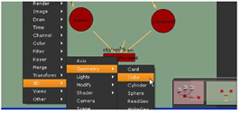
默认立方体基本体显示在 3D 工作区的中心。让我们减少立方体上的细分数量。
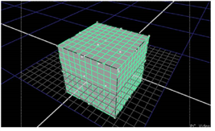
| 5. | 在 Cube1 控制面板中，更改 行 参数到 4 。更改 列 参数到 4 ,也是。 |
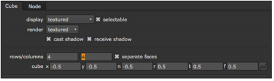
| 6. | 连接 Cube1 节点到 场景 2 节点。现在让我们调整立方体的形状。 |
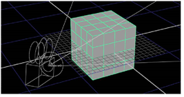
| 7. | 通过向下拖动顶部中心点来降低立方体的高度。 |
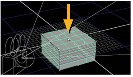
| 8。 | 从视图下拉菜单中，选择 前面 查看以查看多维数据集的非透视视图。这些非透视视图可以帮助您比在透视视图中更准确地调整对象的大小和位置。 |
嗯.立方体实际上在 x轴下面。让我们向上移动它，但是检查 Cube1 控制面板。
| 9. | 拖动立方体的顶部，直到 t (顶部) 中的值 Cube1 控制面板是关于 0.3 。拖动立方体的底部，使其与 x 轴对齐。 |
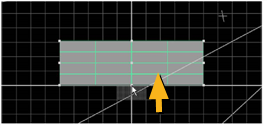
| 10. | 看起来你不需要立方体两侧的 4 个分区，所以将行数更改为 2 在 Cube1 控制面板。 |
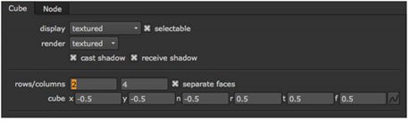
现在让我们添加更多的基本元素 -- 圆柱体和球体。
| 11。 | 右键单击节点图并选择 3D > 几何 > 气缸 。连接 Cylinder1 节点到 场景 2 节点。 |
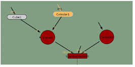
| 12. | 将视图更改为 3D (V) 缩小一点，看到整个圆柱体。 |
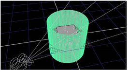
| 13。 | 在 der1 控制面板中，设置 行 到 1 ,该 列 到 20 . |
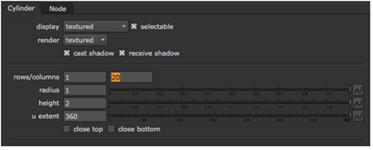
| 14. | 设置 半径 到 0.35 和高度到 1.5 。还请选中该框 关闭顶部 . |
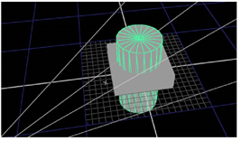
所以现在你有一个圆柱体在场景中。
| 15。 | 从 “视图” 下拉菜单中选择 “前面”，然后向上移动圆柱体，使其停留在立方体的顶部。 |
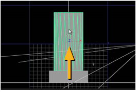
| 16。 | 现在添加一个球体。选择 3D > 几何 > 球体 。在 Sphere1 控制面板中，将 行 和 列 到 15 ,并更改 半径 到 0.35 . |
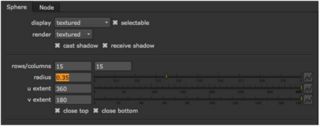
| 17. | 确保球体控制面板处于打开状态，并移动球体对象以覆盖圆柱体的顶部。 |
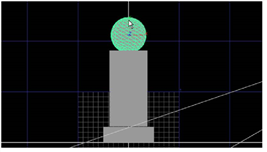
| 18. | 选择 3D 从 “视图” 下拉菜单中，围绕场景中的对象旋转视图。 |
此时，它们没有表面属性，因此您需要将二维图像从节点图连接到每个对象。
| 19。 | 在节点图中，连接 Concrete.jpg 到每个对象。 |
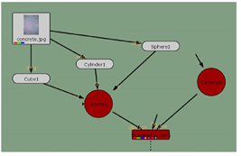
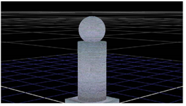
|
|